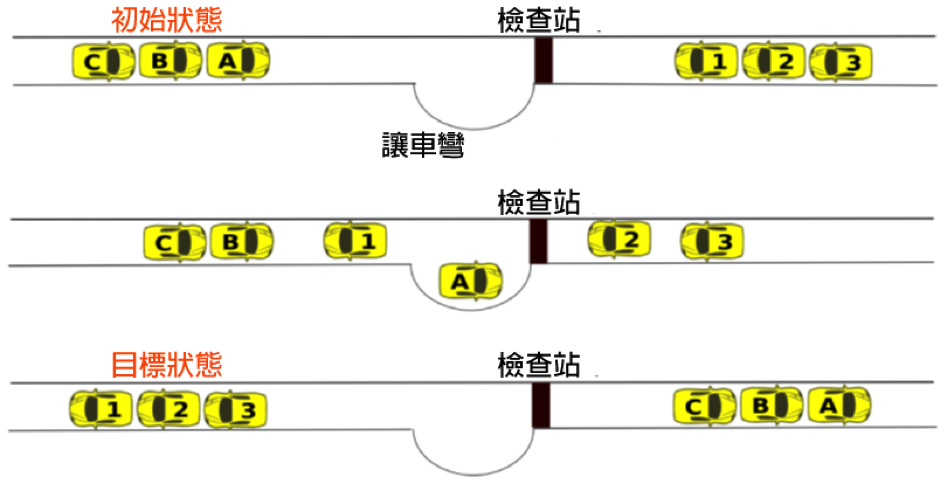

會車
如下圖所示，有六台車被困在一條狹小的道路上，其中三台車（Ａ、Ｂ和Ｃ）要由左向右走，而另外的三台車（1、2及3）要由右向左走。圖上有一個檢查站，檢查站設有感應器可以計算有幾台車經過(同一台車前進或後退都會各感應一次)。
雖然道路狹窄無法讓兩台車併行，但是檢查站的旁邊有一個讓車彎，可供一台車暫時停靠，讓對向來車通過。

請問這六台車從最開始給定的初始狀態到會車完成的目標狀態，感應器會記錄有多少車次經過？
如下圖所示，有六台車被困在一條狹小的道路上，其中三台車（Ａ、Ｂ和Ｃ）要由左向右走，而另外的三台車（1、2及3）要由右向左走。圖上有一個檢查站，檢查站設有感應器可以計算有幾台車經過(同一台車前進或後退都會各感應一次)。
雖然道路狹窄無法讓兩台車併行，但是檢查站的旁邊有一個讓車彎，可供一台車暫時停靠，讓對向來車通過。
請問這六台車從最開始給定的初始狀態到會車完成的目標狀態，感應器會記錄有多少車次經過？